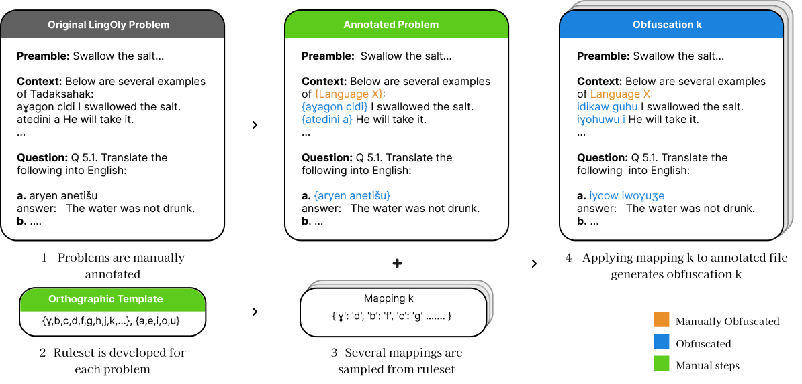
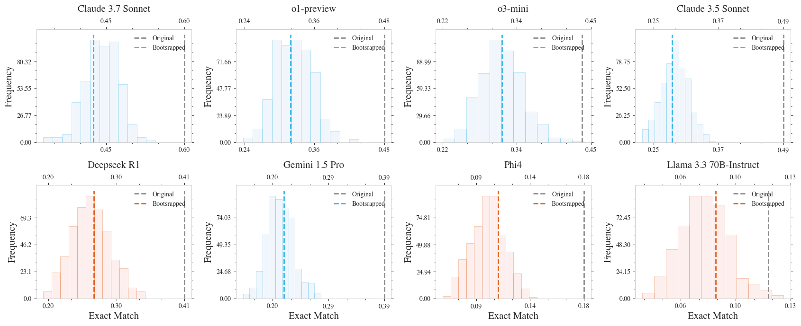
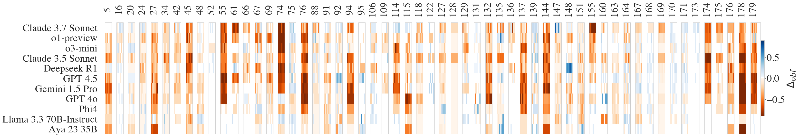

Are Recent LLMs Better at Reasoning, or Better at Memorizing?
By carefully designing a reasoning benchmark that counteracts memorization skills in LLMs, LingOly-TOO (L2) Benchmark challenges frontier models with unseen questions and answers and makes the case that LLMs are not consistent reasoning machines yet.

Do recently announced LLMs reason?
By the time this post was published, a new wave of frontier models had been announced including ones specifically designed to reason using Inference Time Compute (ITC)1. Anthropic’s Claude 3.7 Sonnet, OpenAI’s o1, o3 and GPT 4.5 models, DeepSeek’s R1 and others demonstrate impressive performance on several reasoning tasks that only few months ago were considered far from solvable234. This, rightfully, ignited conversations about an important question: Have we finally reached the era were models can do advanced reasoning?
The need for an unbiased evaluation of reasoning
A standard framework to answer such a question in the NLP domain is to use evaluation benchmarks that tests various reasoning skills via tasks which require a model to apply several sequential reasoning steps to reach the correct answer. The key to this approach is to select tasks and test cases that models have not had prior exposure to. This, in the era of LLMs, has proven to be a major challenge. In part because of the massive scale of training datasets which consists of trillions of words used in developing these models, but also because several of the frontier models are proprietary with little to no information about used training dataset that is available for the research community to take into account in their assessments. This consequently complicates objective evaluation of reasoning skills in LLMs. It also raises concerns that we might be over-estimating their capabilities in advanced reasoning.
LingOly-TOO (L2) Benchmark
To address this, we need reasoning benchmarks with stronger guarantees that the chance of prior data exposure is minimal. This is exactly what our new benchmark LingOly-TOO targets. By extending an already challenging benchmark LingOly5 which utilize low-resource languages taken from the UKLO Linguistics Olympiad, LingOly-TOO rewrites key parts of questions and answers to minimize the chance of model’s reliance on their internal knowledge in answering.

Each problem includes several questions such as translating a sentence from a source language to a destination language by inferring grammatical rules from provided examples. We generate multiple permutations (called obfuscations) of the relevant parts of the questions based on carefully designed rules for character swapping for that specific problem (referred to as an Orthographic Template). These obfuscated versions preserve the reasoning steps needed to answer the question but are written in different spellings than in the original language. Using this protocol, we are able to generate multiple versions of each problem all of which measure the same reasoning skill and require the same “thinking logic” by the model. For our experiments, we generate up to 6 obfuscations for each of the 82 problems. The benchmark in total includes over 1200 question-answer pairs but the framework allows for generating many more obfuscations if needed.
Can reasoning models solve unseen problems?
We evaluated 11 state-of-the-art models on our obfuscated data (Figure 1). Claude 3.7 achieved the best score with 43.6% exact match outperforming all other models we evaluated by a significant margin! Other models struggled on our tasks and scored below 31% indicating that L2 Benchmark is challenging even to state-of-the-art reasoning models. You can check the updated leaderboard for results of all models.

We also compare the obfuscated vs. original data to test if models consistently apply the same reasoning over information in the prompts to generate their answers across all written forms. Our results suggest this is not always the case! All models perform noticeably better on unobfuscated versions than on obfuscated ones despite requiring identical reasoning steps (Figure 1). We also conducted a randomized controlled study on human participants and found that the average gap between the performance of obfuscated and unobfuscated questions is much smaller compared with LLMs.
This could be explained by the fact that LLMs utilize numerous prediction mechanism in answer generation including but not limited to reasoning. We test this hypothesis by removing critical context needed to solve the tasks and re-prompting models to answer the now unsolvable questions. Correct answers in this setting are, therefore, reached by chance, memorization skills, or means other than reasoning. When presented with the obfuscated version of these questions, o1-preview scored below 1% as expected. However, the model scored a much higher ~7% when the unsolvable questions were presented in their original spelling. It seems that when possible, models try to “guess” the answer using a form of memorization and internal knowledge learned from training data which tends to only work when the tasks are in their original written form. For example, we found examples where GPT-4o answers translation questions directly from knowledge of the language without using inductive reasoning on examples provided in context, effectively circumventing the reasoning pathway and using direct translation. The obfuscation procedure successfully counteracts this phenomenon and provides scores that better correlate with reasoning abilities on linguistics tasks.
All models exhibit performance variance across obfuscations as shown in Figure 3 which shows bootstrapped estimate of benchmark scores over multiple samples from the benchmark data. Interestingly, not all obfuscations have the same impact! Some models improve on obfuscated versions (blue areas in Figure 4). In few problems, the obfuscation has similar effect across several open and closed source models such in problems 45, 74, 144, and 178 in Figure 4. However, the gap between original and obfuscated questions tends to be larger for higher-resource languages.

Conclusion
LingOly-TOO Benchmark provides a measure of the reasoning abilities in LLMs. Results of state-of-the-art LLMs show that in general, the recent models are improving upon previous ones in reasoning. Specifically, ITC seems to help in linguistic reasoning even compared to larger size LLMs such as GPT 4.5. However, our results do show that memorization abilities of LLMs play a role in the prediction mechanisms of reasoning models. This opaque nature of prediction warrants further attention by the research community. Under what conditions do LLMs employ reasoning steps in response generation and when do they resort to memorization?
Finally, the obfuscation procedure provides a cautionary tail on the importance of controlling for confounders in measurement and proposes a more modest estimate of reasoning abilities in frontier models, for now.
Checkout the paper and website for more details about the obfuscation protocol, how the benchmark was developed, the human study and additional experiments on the impact of tokenization on reasoning performance!
Citation
Khouja, J., Korgul, K., Hellsten, S., Yang, L., Neacsu, V., Mayne, H., Kearns, R., Bean, A., & Mahdi, A. (2026). LINGOLY-TOO: Disentangling Memorisation from Reasoning with Linguistic Templatisation and Orthographic Obfuscation. Proceedings of the International Conference on Learning Representations (ICLR).
@inproceedings{khouja2025lingoly,
title={LINGOLY-TOO: Disentangling Memorisation from Reasoning with Linguistic Templatisation and Orthographic Obfuscation},
author={Khouja, Jude and Yang, Lingyi and Korgul, Karolina and Hellsten, Simeon and Neacsu, Vlad A. and Mayne, Harry and Kearns, Ryan Othniel and Bean, Andrew M. and Mahdi, Adam},
booktitle={Proceedings of the International Conference on Learning Representations (ICLR)},
year={2026}
}